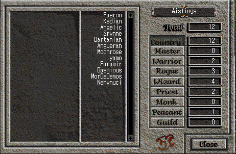

|  | The Who List allows you to see who is currently in Temuair. People on your friends list will appear in green, fellow guild members in blue. You can click on the different tabs (Rogue, Master, etc) to narrow down the list to all Rogues online, all Wizards online, and so on. "Master" is reserved for a special group of powerful Aislings, who have reached level 99. The list is sorted by level, so in this example, Faeron is the highest level player online, and Nehynuci is the lowest level. |
Return to the Interface Guide